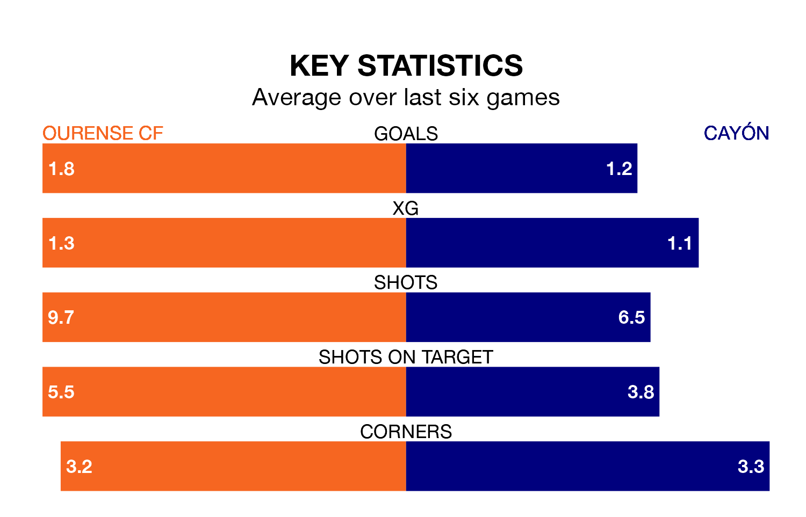

Ourense CF host Cayón in Saturday's late match at the Estadio Mpal De Oira looking to bounce back from defeat last time out in the Segunda División RFEF Group 1.
Ourense, who sit second in the league after 28 games, fell to a 1-1 away defeat to Langreo on March 23.
They face a Cayón side who picked up a win in their last match, a 4-0 victory against SD Compostela, and who sit 16th in the table.
With 41 goals in 28 games so far this season, Ourense are the league's second-highest scorers with 1.5 goals per game. And they are conceding fewer than average, letting in 17 goals at a rate of 0.6 per game.
Cayón, meanwhile, are below average scorers, with 1.0 goal per game, compared to a league average of 1.2. They have conceded 1.4 goals per game.
The hosts are in reasonable form in the Segunda División RFEF Group 1, with three wins and two draws from their last six games.
With a win and three draws over that period, the away side's form is worse – they have taken six points from 18, compared to Ourense's 11.
Updated: 12:16 (UTC), 25/03/24